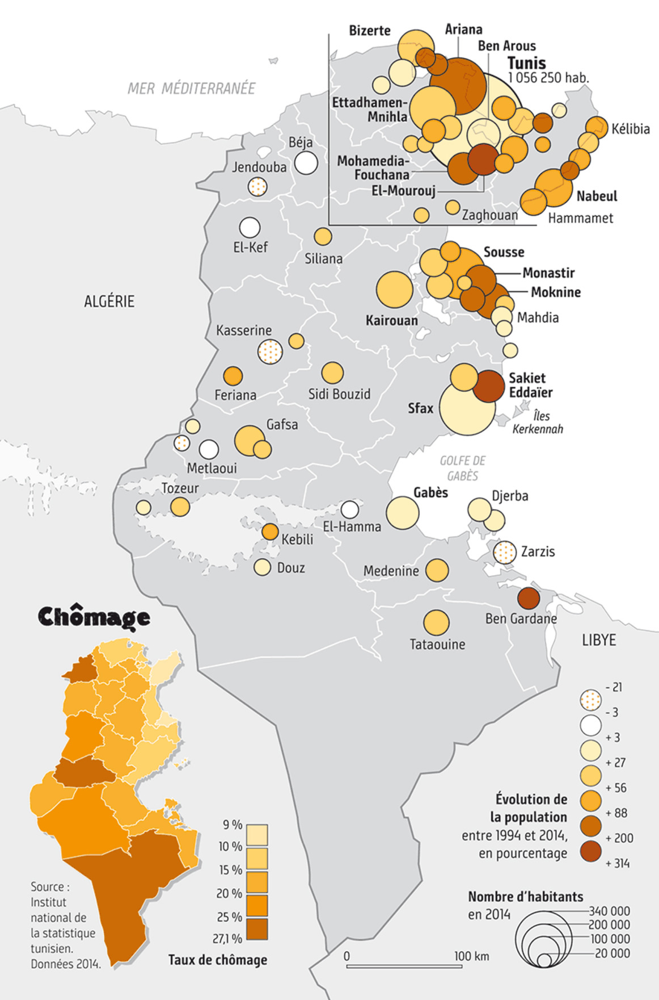

Maps for Le Monde Diplomatique
cartography · August 2018
In August 2018, I did an internship at the French newspaper Le Monde diplomatique, where I worked with the cartographer Cécile Marin. I focused on two projects: the creation of maps for an article by Guillaume Pitron on electric vehicles and rare earths, and the creation of content for a special issue about Tunisia. I collected and analyzed data, imagined a way to turn this data into maps, and designed the maps on Adobe Illustrator.
On the newspaper website:
